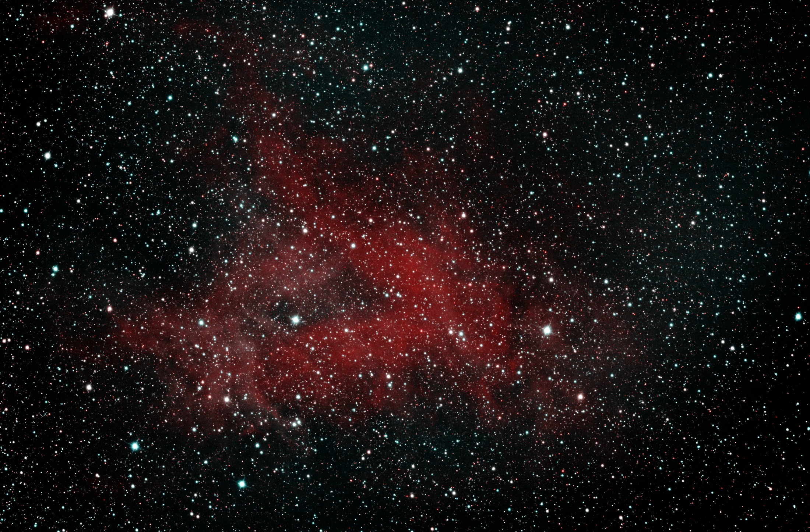
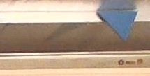
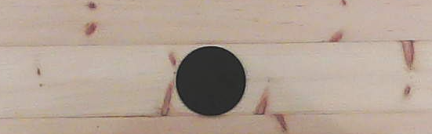

DISTANCE: ~5,000 LIGHT YEARS | TYPE: EMISSION NEBULA
IC1318, commonly known as the Butterfly Nebula, is a vast emission nebula in the constellation Cygnus, spanning over 100 light-years. It is ionized by hot young stars in the Cygnus OB3 association, creating glowing hydrogen clouds and intricate dark dust lanes that give it its distinctive shape. This region exemplifies massive star formation and feedback processes in the galactic plane, with supernova remnants and expanding bubbles sculpting the interstellar medium.
On Earth: ~3,000 BC
The light from IC1318 left around 3000 BC, during the late Neolithic period. In Mesopotamia, the Sumerians were developing early cities like Uruk and inventing cuneiform writing. In Egypt, predynastic cultures were unifying along the Nile, leading to the first pharaohs. Stonehenge's early phases were being constructed in Britain, and agriculture was spreading across Europe and Asia.
IC5146 - Cocoon Nebula
DISTANCE: ~4,000 LIGHT YEARS | TYPE: EMISSION / REFLECTION NEBULA
IC5146, the Cocoon Nebula, is a young star-forming region in the constellation Cygnus consisting of both an emission nebula and a reflection nebula wrapped around a nascent star cluster. Ionizing radiation from the central hot star BD+46°3474 illuminates and sculpts the surrounding hydrogen gas, producing the nebula's vivid reddish glow, while residual dust reflects bluer starlight. Extending from the Cocoon is a striking dark molecular cloud known as Barnard 168—a dense filament of cold gas and dust that blocks background starlight and represents the raw material from which the cluster recently formed. The system offers a rare glimpse into the transition from a cold dark cloud to an active H II region, capturing stellar birth in near real time on cosmic scales.
On Earth: ~2,000 BC
These photons began their journey during the Early Bronze Age. In Egypt, the Middle Kingdom was flourishing—pharaohs commissioned monumental temples and expanded trade networks deep into Nubia and the Levant. In Mesopotamia, the Third Dynasty of Ur gave way to the rise of Babylon. Meanwhile, the first Indo-European migrations were reshaping the populations of Europe and South Asia, and Stonehenge was receiving its final massive sarsen stones.
IC727 - Spiral Galaxy
DISTANCE: ~30 MILLION LIGHT YEARS | TYPE: SPIRAL GALAXY
IC727 is a spiral galaxy in the constellation Draco, characterized by its well-defined arms and active star-forming regions. At approximately 30 million light-years, it provides opportunities to study galactic structure and evolution in relative proximity, including supernova remnants and interstellar medium dynamics.
On Earth: 30 Million Years Ago
In the Oligocene epoch, primates diversified with the emergence of early monkeys. The climate cooled, leading to the expansion of grasslands and the evolution of grazing mammals. India continued colliding with Asia, raising the Himalayas, while Antarctica's ice cap began forming.
M13 - Hercules Globular Cluster
DISTANCE: ~25,000 LIGHT YEARS | TYPE: GLOBULAR CLUSTER
M13 is one of the oldest known globular clusters in the Milky Way, containing over 300,000 stars packed into a 145 light-year diameter sphere. Aged at 11.65 billion years, it orbits the galactic center in a halo trajectory, providing insights into stellar evolution, variable stars, and the galaxy's formation history through its low-metallicity Population II stars.
On Earth: ~23,000 BC
When this light departed M13, Earth was in the Last Glacial Maximum. Modern humans were creating cave art in Europe, like at Lascaux. Hunter-gatherers adapted to ice age conditions, with megafauna like mammoths dominating. The Bering land bridge allowed migration to the Americas.
M51 - Whirlpool Galaxy
DISTANCE: ~23 MILLION LIGHT YEARS | TYPE: INTERACTING SPIRAL GALAXY
M51 is a grand-design spiral interacting with companion NGC 5195, triggering enhanced star formation visible in its arms. This system exemplifies tidal interactions, density waves, and galaxy mergers, with a Seyfert nucleus indicating black hole activity.
On Earth: 23 Million Years Ago
The Miocene epoch saw grasslands expand, with early apes diversifying in Africa. Massive sharks like Megalodon ruled the oceans, and the Himalayas rose higher. Continental drift shaped modern geography, with cooling climates setting the stage for future ice ages.
M57 - Ring Nebula
DISTANCE: ~2,300 LIGHT YEARS | TYPE: PLANETARY NEBULA
M57, the Ring Nebula in the constellation Lyra, is one of the sky's most iconic planetary nebulae—a glowing shell of ionized gas expelled by a Sun-like star as it exhausted its nuclear fuel and shed its outer layers. The faint white dwarf at the center, once the star's core, radiates intense ultraviolet light that causes the surrounding gas to fluoresce in concentric rings of oxygen, hydrogen, and nitrogen. While it appears as a simple torus from our vantage point, three-dimensional models reveal a more complex barrel-shaped structure, viewed nearly end-on. M57 represents the inevitable fate of stars like our own Sun, offering a preview—roughly five billion years in the future—of what will become of our solar neighborhood.
On Earth: ~300 BC
These photons departed during the early Hellenistic period, shortly after the death of Alexander the Great. His conquests had spread Greek culture from Egypt to the borders of India, and successor kingdoms—the Ptolemaic, Seleucid, and Antigonid dynasties—were carving up his empire. In China, the Warring States period was drawing to a close as the Qin state steadily consolidated power, just decades away from unifying China under its first emperor. In the Mediterranean, the Roman Republic was expanding southward, laying the groundwork for an empire.
M63 - Sunflower Galaxy
DISTANCE: ~29 MILLION LIGHT YEARS | TYPE: SPIRAL GALAXY
M63 features flocculent spiral arms with patchy star formation. Its active nucleus and ultraviolet excess suggest recent starburst activity, providing insights into spiral structure maintenance without strong density waves.
On Earth: 29 Million Years Ago
The late Oligocene saw the diversification of early elephants and the spread of grasslands. In Antarctica, ice sheets expanded, cooling the planet. Primate evolution accelerated, with ancestors of Old World monkeys appearing.
M74 - Phantom Galaxy
DISTANCE: ~32 MILLION LIGHT YEARS | TYPE: SPIRAL GALAXY
M74 is a face-on grand-design spiral with well-defined arms rich in H II regions. Its low surface brightness and symmetric structure make it a prime target for studying spiral density waves and star formation triggers.
On Earth: 32 Million Years Ago
The Eocene-Oligocene transition brought rapid cooling and mass extinctions of marine life. Early elephants and odd-toed ungulates evolved, while the first Antarctic ice sheets formed, lowering sea levels worldwide.
M94 - Croc's Eye Galaxy
DISTANCE: ~16 MILLION LIGHT YEARS | TYPE: SPIRAL GALAXY
M94, nicknamed the Croc's Eye Galaxy, is a compact spiral galaxy in Canes Venatici notable for its unusually bright, starburst-active nucleus ringed by a tightly wound inner disk. Surrounding this inner structure is a broader, faint outer ring of older stellar populations—giving the galaxy a nested, multi-ring architecture rarely so clearly displayed. The intense star formation in the inner ring is thought to be driven by a density wave resonance rather than a galaxy merger, making M94 a valuable case study in internally triggered starbursts. Its relatively face-on orientation allows astronomers to map the transition zones between these distinct stellar populations in fine detail.
On Earth: 16 Million Years Ago
These photons left during the middle Miocene, an era of exceptional warmth known as the Miocene Climatic Optimum. Vast subtropical forests stretched across Europe and North America, supporting diverse faunas of early apes, three-toed horses, and mastodons. In East Africa, the ancestors of humans were beginning to diverge from other great ape lineages. The Himalayan and Alpine mountain-building was in full swing, gradually reshaping ocean circulation and setting the stage for the planet's long cooling trend toward the Ice Ages.
M101 - Pinwheel Galaxy
DISTANCE: ~21 MILLION LIGHT YEARS | TYPE: SPIRAL GALAXY
M101 is a grand-design spiral with asymmetric arms possibly due to interactions with companions. Hosting numerous H II regions, it has a high supernova rate, making it ideal for studying star formation and galactic asymmetry.
On Earth: 21 Million Years Ago
In the Miocene, apes proliferated in Africa and Eurasia. Grasslands expanded, leading to the evolution of modern horses and elephants. The Mediterranean Sea experienced desiccation events, and global temperatures began a long-term cooling trend.
M106 - Spiral Galaxy
DISTANCE: ~23.5 MILLION LIGHT YEARS | TYPE: SPIRAL GALAXY
M106 is a Seyfert spiral with anomalous arms of hot gas, likely ejected from its active nucleus. This LINER galaxy demonstrates feedback from supermassive black holes, influencing star formation and galactic evolution.
On Earth: 23.5 Million Years Ago
Early Miocene saw the diversification of grazing animals as grasslands spread. Apes migrated from Africa to Eurasia, and massive volcanic eruptions formed the Columbia River Basalts. Global cooling continued, leading to Antarctic glaciation.
NGC1275 - Perseus A
DISTANCE: ~230 MILLION LIGHT YEARS | TYPE: SEYFERT GALAXY
NGC1275 is the dominant galaxy in the Perseus Cluster, a radio galaxy with an active nucleus powered by a supermassive black hole. It exhibits filamentary structures of cool gas falling into the hot intracluster medium, providing key evidence for AGN feedback mechanisms that regulate star formation and cluster cooling flows.
On Earth: 230 Million Years Ago
The photons left during the Triassic period, when the supercontinent Pangaea was forming. Early dinosaurs and mammals were emerging after the Permian extinction. Vast forests of cycads and ferns covered the land, and the first flying reptiles appeared in a world recovering from mass extinction.
NGC3190 - Hickson Compact Group 44
DISTANCE: ~70 MILLION LIGHT YEARS | TYPE: INTERACTING SPIRAL GALAXY GROUP
NGC3190 is the most prominent member of Hickson Compact Group 44 (HCG 44) in Leo—a tight knot of four gravitationally bound galaxies whose mutual interactions are visibly warping their structures. NGC3190 itself is an edge-on spiral with a striking, sharply twisted dust lane, the result of tidal forces from its neighbors. Compact groups like HCG 44 are among the densest galaxy environments known, where repeated close encounters strip gas, trigger starbursts, and ultimately drive galaxies toward merger. The group serves as a local laboratory for understanding how environment accelerates galactic evolution, a process that shaped much of the large-scale structure of the universe.
On Earth: 70 Million Years Ago
These photons left Earth during the twilight of the age of dinosaurs—roughly five million years before the Chicxulub asteroid impact that ended the Cretaceous. Tyrannosaurus rex and Triceratops were roaming what is now North America, while mosasaurs ruled shallow inland seas. Flowering plants had transformed terrestrial ecosystems over the preceding tens of millions of years, and small insectivorous mammals were quietly diversifying in the undergrowth, poised to inherit the Earth.
NGC4565 - Needle Galaxy
DISTANCE: ~47 MILLION LIGHT YEARS | TYPE: SPIRAL GALAXY
NGC4565 is an edge-on spiral showcasing a prominent dust lane bisecting its thin disk. Similar in size to the Milky Way, it allows detailed study of galactic structure, including bulge-to-disk ratios and dark matter halo effects through rotation curve analysis.
On Earth: 47 Million Years Ago
During the Eocene, Earth had a greenhouse climate with palm trees in polar regions. Early whales evolved from land mammals, and primates began diversifying. Massive volcanic activity in the North Atlantic formed new ocean basins.
NGC6339 - Spiral Galaxy
DISTANCE: ~94 MILLION LIGHT YEARS | TYPE: SPIRAL GALAXY
NGC6339 is a barred spiral in Hercules with disturbed arms indicating possible interactions. Its kinematics show perpendicular rotation to its major axis, making it valuable for studying galactic bars and secular evolution.
On Earth: 94 Million Years Ago
During the Late Cretaceous, dinosaurs like Tyrannosaurus roamed while flowering plants diversified. The Western Interior Seaway divided North America, and birds began evolving from theropods. The stage was set for the Chicxulub impact.
NGC6888 - Crescent Nebula
DISTANCE: ~5,000 LIGHT YEARS | TYPE: EMISSION NEBULA
NGC6888 is a wind-blown bubble formed by the Wolf-Rayet star WR 136, with fast stellar winds colliding with slower red giant ejecta. This 25 light-year shell illustrates late-stage stellar evolution and nebular dynamics.
On Earth: ~3,000 BC
Similar to IC1318's era, this was the time of early Bronze Age civilizations. In Egypt, the Old Kingdom began pyramid construction. Sumerians developed urban centers, and the Indus Valley Civilization emerged with advanced city planning.
NGC7331 - Deer Lick Galaxy
DISTANCE: ~40 MILLION LIGHT YEARS | TYPE: SPIRAL GALAXY
NGC7331 is an unbarred spiral galaxy often compared to the Milky Way, with a prominent dust lane and active star formation in its arms. As the brightest member of its group, it showcases galactic interactions and serves as a calibrator for the cosmic distance ladder through its Cepheid variables.
On Earth: 40 Million Years Ago
During the Eocene epoch, Earth experienced a warm climate with lush forests extending to the poles. Early primates evolved in these environments, while modern mammal orders like whales transitioned from land to sea. Antarctica began separating from Australia, initiating global cooling trends.
NGC7635 - Bubble Nebula
DISTANCE: ~7,100 LIGHT YEARS | TYPE: EMISSION NEBULA
NGC7635 is a spherical shell created by the stellar wind from a massive O-type star, expanding into the surrounding molecular cloud. This 7 light-year diameter bubble demonstrates wind-blown nebula formation and ionization processes in H II regions.
On Earth: ~5,100 BC
The Neolithic period saw the rise of farming villages in the Middle East. Pottery and weaving advanced, and early metallurgy began with copper. In Europe, megalithic tombs were constructed, marking the transition from hunter-gatherer societies.
NGC891 - Silver Sliver Galaxy
DISTANCE: ~30 MILLION LIGHT YEARS | TYPE: SPIRAL GALAXY
NGC891 is an edge-on spiral with a thick dust lane, similar to how the Milky Way might appear from outside. It reveals vertical structures in its disk, informing models of galactic fountains and the role of magnetic fields in halo gas dynamics.
On Earth: 30 Million Years Ago
The Oligocene featured the rise of modern mammal families. Early whales diversified in the oceans, and the first grasses appeared, transforming ecosystems. Tectonic activity continued shaping continents, with Australia separating from Antarctica.
NGC925 - Barred Spiral Galaxy
DISTANCE: ~30 MILLION LIGHT YEARS | TYPE: BARRED SPIRAL GALAXY
NGC925 is a late-type barred spiral with asymmetric arms and low star formation rate. Part of the NGC 1023 group, it exhibits tidal distortions, useful for studying environmental effects on galaxy morphology and evolution.
On Earth: 30 Million Years Ago
The Oligocene epoch featured the evolution of early cats and dogs. Massive birds like terror birds dominated South America. Global cooling led to the retreat of tropical forests and the rise of temperate ecosystems.
SH2-101 - Tulip Nebula
DISTANCE: ~6,000 LIGHT YEARS | TYPE: EMISSION NEBULA
SH2-101, the Tulip Nebula, is an H II region ionized by the young star cluster near microquasar Cygnus X-1. Spanning 70 light-years, it demonstrates stellar wind interactions and triggered star formation, with dark molecular clouds silhouetted against glowing hydrogen gas.
On Earth: ~4,000 BC
The Neolithic Revolution was underway, with agriculture spreading in the Fertile Crescent. Megalithic structures like Göbekli Tepe were built in Anatolia. In Europe, farming communities emerged, while in China, early rice cultivation began along the Yangtze River.

SH2-92 - Emission Nebula in Vulpecula
DISTANCE: ~12,000–14,000 LIGHT YEARS | TYPE: H II REGION
SH2-92 is the ninety-second entry in Stewart Sharpless's 1959 survey of galactic H II regions — vast clouds of interstellar hydrogen ionized by the ultraviolet output of nearby hot stars, glowing as their electrons recombine. Lying in Vulpecula almost exactly in the plane of the Milky Way, it spans over 200 light years, and its ionizing source is believed to be WR 127, a Wolf-Rayet star in the brief, violent phase a massive star enters as it strips away its own outer envelope. Distance estimates place it near the outer edge of the Orion Arm, though they disagree by a couple of thousand light years.
Its sheer size works against it visually: the same emission spread across a degree of sky is a faint wash rather than a bright object, and it is imaged far less often than showpiece nebulae a fraction of its true extent. This portrait took 27.5 hours across nine nights, split between hydrogen-alpha and doubly-ionized oxygen — the red and the teal respectively — and doubles as the first target processed end to end without human intervention. The write-up is in The Science →
On Earth: ~11,000 BC
This light set out as the last ice age was releasing its grip. Ice sheets were retreating across northern Europe and North America, sea levels were beginning the rise that would drown the Bering land bridge, and mammoths, giant ground sloths and sabre-toothed cats were entering their final few millennia. Human hunter-gatherers had reached the southern tip of South America, and in the Fertile Crescent the Natufians were harvesting wild cereals from settled villages — the first hesitant step toward agriculture.
A search that finds nothing looks exactly like a search that works
2026-08-05 · INJECTION TESTING · 3 BUGS IN THE PIPELINE · 4 IN THE TEST
Abstract
A supernova search that had reported nothing for weeks turned out to be incapable of detecting a supernova — and no amount of reading its output would have revealed it, because a working detector and a blind one both print “no candidates”. Injecting fake sources of known brightness into real frames exposed three pipeline bugs in a single run: a shape cut that rejected 85% of genuine point sources, a mask that deleted the brightest transients by construction, and catalogue identification that had been dead for 67 commits. It also exposed four bugs in the test itself. The closing argument is why the standing assertion is monotonicity rather than a pinned number: a conventional regression test would have recorded the broken behaviour as correct and failed the repair.
The question
The supernova search had been running for weeks and had found
nothing. That is the correct result — one amateur telescope
revisiting a couple of dozen galaxies should discover approximately
none — and the note describing it said so with some confidence.
But it also carried a caveat that turned out to be the only
interesting sentence in it: a non-detection is worth exactly what
its sensitivity is. "Nothing found" is a statement about the sky
only if you know how bright a real event would have had to be to
survive the filtering. Otherwise it is a statement about the
software. And the two are indistinguishable from the output, because
a detector that is working perfectly and a detector that is
completely blind both print "no candidates".
That is an uncomfortable position for every cut in the pipeline. Each
one was added because it removed false positives, and each one
demonstrably did. Nothing in a normal run reveals whether it also
removed the real thing.
The method: stop waiting for a supernova
A supernova cannot be summoned on demand, so the answer is to inject
fake ones. Take the real frames from a real night, paint in synthetic
point sources of known position and known brightness, run the entire
unmodified pipeline, and count how many come back. The result is a
completeness curve: recovery fraction against brightness. It
is standard practice in professional surveys for exactly this reason,
and the script to do it had been sitting in the repository, unrun.
Two words are doing a lot of work here, and neither means quite
what it sounds like. The template is a deep image
of the same patch of sky, built by stacking every previous
night. The science image is the most recent
night's stack. Both are ordinary exposures of the target and differ
only in when — neither has anything to do with
calibration frames, the bias, dark and flat exposures that remove
the instrument's own signature. Subtract "before" from "now", and
what remains is what changed.
Two details then decide whether the exercise means anything. The
injections go into the real registered science frames, so they carry
the night's actual noise, sky and galaxy underneath — only the
source is synthetic. And they are injected into the science image
only, never the template, so they look precisely like something that
appeared since the last visit.
The first run answered the question immediately
It produced this, on NGC 5907:
Injected flux (ADU)
Recovered
100
0 / 3
200
0 / 3
400
2 / 3
800
0 / 3
1600
0 / 3
3200
0 / 3
6400
0 / 3
This is not a detection limit. It is impossible. A source
sixteen times brighter cannot be harder to find than one at 400 ADU,
and no amount of noise produces that shape. The curve is not a
measurement of the sky; it is a bug report about the detector, and it
took one run to get it.
Three bugs, and none of them were visible in normal output
The shape window was tuned backwards. A supernova is
a point source, so the search kept only compact round residuals
— semi-major axis between 0.6 and 1.3 pixels, said to match
"measured stellar a ≈ 0.7". That figure does not
describe this telescope. Measured on the stack: real stars have median
a = 2.51 (FWHM 5.6 px), and residuals in the difference
image 2.83. The window was admitting 15% of genuine point
sources and rejecting the rest as "extended" — it was
selecting for the sub-pixel artifacts it existed to exclude.
The 0.7 figure was almost certainly measured on hot pixels.
Widening it to the measured stellar spread raised recovery from 2/21
to 8/21 and lowered false positives from 5 to 3. That is the
detail worth pausing on: this was never a trade between sensitivity
and purity. The cut was simply worse on both axes, and had been for
as long as it existed.
Bright transients masked themselves out. Saturated
stars subtract badly, so the pipeline masked the top 0.1% of pixels
and rejected anything landing inside. It built that mask from the
science image — and a bright supernova is, by
definition, among the brightest pixels of the science image. Every
injection at or above 3200 ADU was being discarded as a saturated
star. The brighter the event, the more certain its rejection.
Saturated stars are in the template too, so building the mask from
the template alone loses nothing: false positives stayed at 3 while
recovery went from 8/21 to 14/21.
Identification had been dead for 67 commits. A
refactor on 17 July changed a shared function to take a solved
astrometric position instead of a file path. The transient search was
never updated, so every call raised a type error — into a
try/except that logged it with the same bland message
used for a failed network lookup. For three weeks the search produced
no coordinates, no catalogue cross-match and no object names. And
because the alert rule is "notify if bright and not a known
star", the clause that suppresses alerts for catalogued variables
could never be true: every bright variable was paging a phone as a
possible discovery.
After all three, on the same field and filter:
Injected flux (ADU)
Before
After
100
0 / 3
0 / 3
200
0 / 3
0 / 3
400
2 / 3
3 / 3
800
0 / 3
3 / 3
1600
0 / 3
3 / 3
3200
0 / 3
3 / 3
6400
0 / 3
3 / 3
Monotonic, against one false positive on the un-injected difference.
The honest summary of the previous weeks is that the search could not
have found a supernova: anything with a normal stellar profile was
cut as extended, and anything bright was masked as a saturated star.
The narrow band where those two failures did not overlap was roughly
400–800 ADU, and even there recovery was about 2 in 21.
The discovery underneath the bugs
Fixing the shape window exposed something more awkward than the bug.
The injected sources all have an identical profile, so their measured
size should be identical too. It is not:
Injected flux
400
800
1600
3200
6400
Measured semi-major axis
1.06
1.90
2.29
2.47
2.66
Same physical width, two and a half times the measured size. The
detector's size estimate is a second moment over pixels above the
detection threshold, and a brighter source lifts more of its wings
above that threshold. So size is not independent of
brightness, and any fixed size window is a brightness cut in
disguise. The window in place now is bounded by measurement
rather than by a mis-remembered number, which is an improvement, but
the right answer is a shape test that compares each candidate against
the frame's own stars at matched brightness. That is a redesign, not
a tuning change, and it has not been done.
Turning the same question on the exoplanet search
If a detector can be structurally blind while looking healthy, the
transit search deserved the same treatment — more so, because it
carries the more prominent claim. HAT-P-32b was found and ranked
first, which reads as evidence the search works.
The transit version injects the opposite sign: a box-shaped dip of
known depth, multiplied into a real star's raw flux before every
normalisation step, so a synthetic transit faces everything a real one
does. It has not yet produced a trustworthy depth floor, for reasons
given below, but it produced one number immediately that needs no
calibration at all: of 1055 stars detected in the field, 490
are searched. The edge margin, validity threshold and
saturation cut discard 54% of the field before any transit scoring
happens. A planet transiting a star in that other half is invisible at
any depth. Whether those cuts are right is a separate question; that
they halve the survey was not written down anywhere.
Four bugs in the test itself
The instrument measuring the instrument needs the same scepticism, and
it earned it. Every one of these produced a confident, wrong result
before being caught:
Mistake
Symptom
Injections placed on stars the search never examines
0% recovery at every depth, including 4%
All injections given one shared epoch
correlated dip, correctly removed by the detrending it was supposed to survive
Epoch rounded to five decimals when recorded
depth silently under-delivered by 10%
Targets chosen by brightness, not photometric quality
same 4% dip at SNR 12.4 on one star and 1.8 on another
The last one is why no transit depth floor is quoted here. Brightness
is not precision, and with targets spanning that range the curve
describes the noise of arbitrarily chosen stars rather than the
sensitivity of the search. Selecting targets by lowest scatter is the
fix and is not yet done.
The assertion that caught all of it
Every failure above — three in the pipeline, four in the test
— announced itself the same way: recovery that did not increase
with signal strength. That is now asserted in both tests, and it is
worth being precise about what is asserted, because the obvious choice
is wrong.
A conventional regression test pins current behaviour and fails when
it changes. One written against the supernova search the day before
would have recorded "recovery = 2/21" as correct, and then failed the
moment the shape window was fixed — reporting the repair as a
regression and defending the bug. Completeness is supposed to
improve, so pinning it is worse than not testing at all.
What cannot legitimately change is the shape. A stronger signal must
not be recovered less often than a weaker one. That is physics rather
than tuning, so it survives any amount of genuine improvement while
still catching every failure listed here. The tests now enforce it and
exit non-zero when it breaks, which makes them a standing check rather
than a thing that was run once.
Writing the check produced two more bugs, in the check. A real failure
— the deepest transit recovered zero times while a shallower one
was found — passed, because the drop sat exactly on the
tolerance. And a legitimate one-sample wobble failed, because
2/3 < 1.0 - 1/3 is true in floating-point arithmetic.
Both are fixed: comparisons are integer counts, and total failure at
the strongest signal is checked with no tolerance at all, since the
easiest case failing outright is never noise.
What this still does not answer
No limiting magnitude yet, and the reason is worse than
"not done". Two identical runs of the fixed supernova
search put the 50%-recovery floor at 400 ADU and then at 800 ADU,
and produced 662 and 892 raw residuals from the same input frames.
A factor of two in the sensitivity, run to run, with nothing
changed. Until that is understood there is no stable number to
convert into a magnitude, and quoting one would be inventing
precision. The monotonicity invariant held in both runs, which is
the argument for asserting shape rather than a remembered value.
The result that survives all of this is not a detection limit. It is
that the pipeline spent weeks reporting a clean, plausible, entirely
meaningless negative, and that no amount of reading its output would
have revealed it. The only thing that did was giving it a question
whose answer was already known.
Looking for something that was not there last night
2026-08-05 · DIFFERENCE IMAGING · RUNS UNATTENDED ON THE GPU BOX · SUPERNOVAE FOUND: 0
Abstract
How the transient command hunts supernovae by subtracting a deep template built from every previous night from the most recent night’s stack. Most of what survives a subtraction is not astronomy, so the bulk of this is about telling a real point source from misregistration dipoles, hot pixels and galaxy structure — and then from the far likelier explanation, a catalogued variable star. Runs unattended on a separate GPU machine after the night’s frames are copied across, and raises a Pushover alert above a threshold. No supernovae found, which is the expected result.
The question
A galaxy photographed twice looks the same both times. That is the
whole difficulty. Somewhere in a spiral arm a star may have exploded
since the last visit, and it will be one dot among several thousand
dots, sitting on top of a bright, structured, wildly uneven
background. Blinking two images by eye is how this was done for
decades and it does not scale past a handful of fields.
The transient command — diff is the
same thing — asks the question mechanically instead. It gathers
every sub ever taken of a target in one filter, splits them by night,
builds a deep template from every night except the most
recent, treats the most recent night as the science image,
and subtracts one from the other. What survives the subtraction is,
in principle, what changed.
Why subtracting two images is harder than it sounds
The two images are never the same image. The telescope was pointed
slightly differently, the seeing was better on one night than the
other, and the sky was brighter or darker. Subtract them naively and
every star in the field leaves a residual, because a star that is
1.9″ wide on one night and 2.4″ on another does not
cancel. So before subtracting, both are registered onto a common
pixel grid, the sharper one is deliberately blurred to match the
softer one, and the background and scale are matched robustly. Only
then is the difference meaningful.
Even done properly, most of what survives is not astronomy. This is
the part worth being honest about, because the first real run said so
loudly: on NGC 5907 the search returned five candidates at
signal-to-noise between 1200 and 7800, numbers that would be
extraordinary if any of them were real. All five were artifacts.
The thousand-sigma figures were themselves the clue. Significance was
being measured against the noise of the whole frame, and NGC 5907 is
an edge-on galaxy with a bright core — a large, genuinely bright
structure that dragged the global noise estimate down and made every
residual look impossibly significant against it. Noise is now measured
in an annulus around each candidate, so a residual is judged against
its own neighbourhood rather than against an average dominated by
somewhere else in the picture.
What a supernova has to look like
The rest of the tuning is a set of statements about what a real
transient is, each one aimed at a specific thing that was being
mistaken for one:
Test
Cut
What it rejects
Local significance
≥ 5σ vs annulus
noise, and the bright-core inflation above
Source size
semi-major 0.6–1.3 px
hot pixels below, galaxy knots above
Roundness
elongation ≤ 1.4
trails, edges, spiral-arm structure
Negative lobe nearby
≥ 4σ within a scaled radius
subtraction dipoles from misregistration
Bright-source mask
inside the mask
saturated-star residuals
Newness
template flux ≤ 50% of science
stars that were always there
Gaia cross-match
within 2″
catalogued stars — down-ranked, not deleted
The size window is the one that carries the most weight, and it is
measured rather than chosen. This telescope undersamples: real stars
on these frames come out with a semi-major axis of about 0.7 pixels
and an elongation near 1.0. A supernova is a point source, so it must
look exactly like a star and nothing else. Anything meaningfully
larger is galaxy structure; anything smaller is a single hot pixel or
a cosmic ray. Two cuts, one measurement.
The dipole test deserves a mention because it catches the failure that
looks most like a discovery. If registration is off by a fraction of a
pixel, subtracting a star leaves a bright crescent beside a dark one.
The bright half alone is a compact, round, significant, apparently new
source. Looking for the matching dark lobe nearby is what tells them
apart, and the search radius scales with the source, because the wide
dipoles thrown off by an edge-on galaxy's structure put their negative
half further out than a fixed radius would ever reach.
Then the harder question: what is it?
Finding a new point of light is the easy half. The overwhelmingly
likely explanation for a star-like object that brightened is a
variable star in our own galaxy, not a supernova in a distant
one. So surviving candidates are cross-matched against Gaia, and
anything within 2″ of a catalogued point source is heavily
down-ranked — down-ranked rather than deleted, since a supernova
can sit close to a foreground star by chance and silently discarding
it would be the one unrecoverable mistake. A SIMBAD lookup then puts a
human-readable name and object type on whatever matched, which usually
ends the question immediately.
On NGC 5907 the tuned search returned one marginal candidate instead of
five spectacular ones. Identification resolved it to a magnitude-17
Gaia star 0.24″ away. Not a supernova — but the pipeline
said so itself, which is the outcome that matters.
Where it runs
None of this happens while the telescope is working. Once the night's
lights and calibration frames are complete they are copied across to a
separate NVIDIA machine, and the search runs there unattended on
what arrived. The observatory PC stays a real-time controller with a
roof and a mount to worry about; the GPU box does the arithmetic in
the morning, when being slow costs nothing.
If a candidate clears signal-to-noise 8 and is not already a
catalogued star, a Pushover notification goes out with the position
and the triptych image — template, science, difference, side by
side, which is the view that lets a human dismiss most things in about
two seconds. Everything else is written to a JSON file to be looked at
whenever. An alert that fires for every marginal blob would be
switched off within a week, so the bar to interrupt somebody is
deliberately higher than the bar to record a candidate.
Result
No supernovae. This is the correct and expected result: a single
amateur telescope revisiting a couple of dozen galaxies should
discover approximately none, and a pipeline that had found one in its
first weeks would be more likely broken than lucky. What the work
bought is a search that produces one honest marginal candidate instead
of five confident wrong ones.
A non-detection is only worth what its sensitivity is.
"Nothing found" means nothing at all without knowing how bright a
real transient would have had to be to survive those cuts —
a set of filters tuned until the false positives went away can
always be tuned until the true positives go too. There is an
acceptance test that answers this by injecting fake sources of
known brightness into the science frames and measuring what
fraction come back, which is the only way to get the number
without waiting for a real supernova. It has since been
run, and it found that this search could not have detected a
supernova at all. What happened next is its own note:
a search that finds
nothing looks exactly like a search that works. The cuts
described above are the corrected ones; the note explains what
they were, and why the difference was invisible.
Learning to denoise without ever seeing a clean image
2026-08-04 · NOISE2NOISE · U-NET, ~7M PARAMS · STATUS: TRAINING, NOT IN THE PIPELINE
Abstract
Every sub-exposure is mostly noise, and the obvious fix — train a network to map noisy images to clean ones — is unavailable, because no clean image of a galaxy exists anywhere to train against. Noise2Noise removes that requirement: map one noisy frame to another noisy frame of the same scene and you converge on the same model, because the noise carries no learnable information. An observatory turns out to be close to the ideal case for it. Covers what was built, four ways it goes wrong — dithering teaches the network that stars are noise — and why nothing consumes the output yet.
The question
Every sub-exposure this observatory takes is mostly noise. A 300-second
frame of a faint nebula carries read noise from the sensor and shot noise
from the photons themselves, and the target is often fainter than either.
The classical answer is to take a lot of frames and average them, which is
what the stacker does, and it works: noise falls as the square root of the
frame count. The question is whether a neural network can do better than
the square root — whether it can recognise what sensor noise looks
like on this camera and remove it, rather than merely averaging it away.
The obvious way to train such a network is supervised learning: show it a
noisy image, show it the clean truth, and penalise the difference. That
approach is unavailable here, and not for want of effort. There is no clean
image of a galaxy. Nobody has one. No exposure is long enough, no sensor
cold enough; the ground truth does not exist anywhere in the universe to be
collected. Every supervised denoiser needs a target that astronomy
fundamentally cannot supply.
The trick, which is the interesting part
Noise2Noise removes the requirement. The insight is that you can train the
network to map one noisy frame to another noisy frame of the same
scene, and get the same model you would have got from clean targets.
The reason is a property of the loss function rather than of the network.
Training minimises the expected error against the target, and the predictor
that minimises squared error against a random target is that target's
mean. If the noise is zero-mean and drawn independently for each
frame, then the mean of the noisy target is exactly the clean signal. So
the network is being asked to predict something whose expected value is the
truth. It cannot predict the specific noise in any particular target frame
— that noise is independent of its input, and therefore carries no
learnable information — so the best it can do is output the underlying
signal. The noise averages out inside the loss instead of inside the stack.
Put another way: the network learns whatever the two frames have in common
and discards whatever differs between them. Point it at two views of the
same sky and what they have in common is the sky.
An observatory turns out to be close to the ideal case for this. The method
needs many independent noisy observations of an unchanging scene, which is
an awkward thing to arrange for photographs of the physical world —
and it is precisely what a telescope produces by accident. Three hundred
frames of the same nebula on the same filter, each with its own independent
draw of read and shot noise, are the by-product of a single ordinary night.
The training pairs cost nothing; they had already been collected and stacked
and archived before the idea came up.
What is built
A four-level U-Net of about seven million parameters, single channel in and
out, trained per filter and per exposure time — the noise character of
a 90-second red frame is not that of a 300-second H-alpha frame, so they get
separate models. Training draws random 256-pixel patch pairs from two
different frames, 2000 pairs an epoch for 130 epochs, with the same random
flip and rotation applied to both members of a pair so they stay aligned.
Inference runs in 512-pixel tiles with 64 pixels of overlap, because the
QHY600 sensor is 9576×6388 and will not fit in video memory whole.
272aa6e
Four ways to get it wrong
Every one of these was found the hard way, and each is a variation on the
same theme: the method erases whatever differs between the two frames, so
any difference you failed to think about is a thing it will destroy.
Dithering deletes the stars. The telescope deliberately
shifts the pointing a few pixels between exposures, so that sensor defects
do not land in the same place every frame. This is good practice for
stacking and fatal for Noise2Noise. If the scene has moved between input and
target, then the stars are among the things that differ between the two
frames — and the network duly concludes that stars are noise and
learns to suppress them. Frames now get registered to a common reference by
matching star centroids before any training happens. Registration is not a
refinement here; it is a correctness requirement, and the failure it
prevents looks like a beautifully smooth image with the astronomy removed.
8c1afd2,
67a1c9a
Pairs must be the same scene. Nothing in the loss function
knows what a scene is. Pair a frame of M13 with a frame of NGC 7331 and the
maths still runs — it just now describes a network learning to predict
the average of all sky, since that is what those two frames have in common.
Pairs are restricted to within one target, which then made the definition of
"one target" load-bearing: an early version grouped frames by directory
depth and grouped by night instead, silently splitting one object
across sessions.
737e79e
Squared error is the wrong loss for a starfield. The
argument above is cleanest for squared error, whose optimum is the mean.
But a starfield contains saturated pixels, and squared error is dominated by
its largest residuals, so a handful of blown-out star cores pull the model
around. The loss is now L1, which optimises toward the median instead and
barely notices outliers. The trade is real and worth stating: the median of
a skewed distribution is not its mean, and photon noise at low count rates
is skewed, so L1 buys robustness at the cost of a small bias the clean
theory does not have. That bias has not been measured here.
e5c149e
The validation split was measuring nothing. The original
code used a standard random split of the dataset, which was a no-op: the
dataset ignores the sample index it is handed and draws a fresh random pair
on every access, so "train" and "val" were both sampling the same pool of
frames. The validation curve was real-looking and meaningless. It now holds
out whole targets — at least two, extended until a fifth of the frames
are held back — so the number measures generalisation to a sky the
model has never seen. That is both the honest test and the actual inference
condition, and it is the one that would expose a model that had memorised
its training scenes rather than learned this camera's noise.
98a8ff7,
2ba083d
Where it runs
Training happens on an NVIDIA box rather than the observatory machine, which
has a telescope to run and no business spending its evening on gradient
descent. This is the first piece of a wider move: the observatory PC stays a
real-time controller, and the heavy image work — denoising now,
stacking and the blind transit search later — migrates to the GPU as
an offline stage that reads the night's frames after they have been copied
across. Denoising is a good first tenant because it is embarrassingly
parallel, needs no interaction, and does not matter if it is late.
Result
There isn't one yet, and that is the honest status. Models train, frames come
out denoised, and the comparison images look convincingly better — which
is exactly the evidence that should be trusted least. Nothing in the nightly
pipeline consumes any of it.
What "looks better" is not. A denoiser that makes an
image prettier and a denoiser that preserves photometry are different
things, and this one has not been shown to be the second. If the network
subtly reshapes stellar profiles it will change measured brightnesses,
and the science on this site — the cluster colour–magnitude
diagram, the 2% transit — lives entirely on measured brightnesses.
A smoother picture that shifts a star by half a percent would be worse
than useless: it would be wrong in a way that still looks right.
So the test to run before this is allowed anywhere near the pipeline is not
a visual comparison. It is the convergence curve already used elsewhere on
this site — stack error against frame count — measured with and
without denoising, to see whether the network genuinely buys frames or merely
launders noise into smoothness. Alongside it, aperture photometry on the same
stars before and after, which is the measurement that would catch the failure
the pretty picture hides.
The papers
The original is Lehtinen, Munkberg, Hasselgren, Laine, Karras, Aittala and
Aila, Noise2Noise: Learning Image
Restoration without Clean Data (ICML 2018) — the paper that
established you can drop the clean target, demonstrated on photographic
noise, Monte Carlo rendering and MRI reconstruction. It is unusually
readable for the strength of what it claims.
Two successors push the same idea further, and are worth knowing about
because they remove the one requirement this observatory happens to satisfy
for free. Noise2Noise still needs two noisy views of a scene. Krull,
Buchholz and Jug, Noise2Void
— Learning Denoising from Single Noisy Images (CVPR 2019), get
there with one image by predicting each pixel from its neighbours and never
letting the network see the pixel it is predicting. Batson and Royer,
Noise2Self: Blind Denoising by
Self-Supervision (ICML 2019), generalise that into a framework needing no
prior on the signal, no noise estimate and no clean data at all. For a
microscopist with one irreplaceable image these are the important papers.
For a telescope that produces three hundred views of the same sky every
clear night, the original is the right tool, and its stronger assumption
costs nothing.
How many hours is it actually worth? Reading the night-planning chart
The chart behind the question “how many hours is this target actually worth tonight?”. The headline is that the naive answer, time above altitude zero, is wrong by roughly a factor of two here, because trees put the local horizon at 46–65 degrees along the target’s track. Then every plotted series and which of them can actually stop the night: only two of seven gate anything. Most of the space goes to the seeing forecast, where the standard amateur proxy — the jet stream — measurably does not work at this site, and a much lower layer does.
The question the chart answers
Before the roof opens, something has to decide whether tonight is worth the
trouble and which target gets it. That reduces to a number — how many
usable hours this object has — and a verdict on whether the weather
permits any of them. This is the chart behind both.
SH2-92 on a real night. Start 22:04, finish 01:57, elapsed
3h53m, air mass 1.03 at best. Seven series on one pair of axes, all
rescaled onto a 0–90 range so they can share the altitude axis.
Click for full size.
The heavy purple curve is the target's altitude, and the grey bands are
darkness. The naive answer to "how long is it up?" is where purple sits
above zero, which here would be most of the night. That answer is wrong by
a factor of two, and the reason is the thick green line.
The horizon is not at the horizon
That green trace is the local horizon, and it is nowhere near zero — it
wanders between about 46° and 65° over the course of the night. It
is not a weather series at all: it is a survey of the trees and buildings
around this observatory, 33 measured altitude readings at fixed compass
bearings. As the target moves across the sky its azimuth changes, so the
obstruction beneath it changes, and the green line is the profile sampled
along the path the target actually takes.
The same horizon in plan view. Centre is the zenith, the edge is
the true horizon, and everything pink is blocked. The white region is the
entire sky this observatory can actually see; blue dots are the target's
track across the night.
It is a humbling picture. Due north the trees reach 82.8°
— less than eight degrees short of straight up — so the northern
sky, Polaris and the circumpolar objects with it, simply does not exist here.
The best direction is due south at 25.1°. This is a site that observes
through a ragged hole, and any planning that assumed a flat horizon would
schedule hours of imaging into a tree.
So the usable window is the intersection of two conditions: the target above
the local horizon, and the sky astronomically dark. For this night
that is 22:04 to 01:57 — 3 hours 53 minutes, against a target that
peaks at 76°. The other number in the title, air mass 1.03, is the
thickness of atmosphere being looked through, relative to straight up, and
it is simply 1/sin(altitude): 1.0 at the zenith, 2.0 at 30°, and rising
sharply after that. It ranks the quality of those hours where the elapsed
time only counts them.
The seven series, and which of them can actually stop the night
This is the part that surprises people, including the person who wrote it.
Seven quantities are plotted. Two of them can veto a night.
Series
Plotted as
Gate
Effect
Cloud cover
red, % of 90
> 80%
BLOCKS
Precipitation probability
pink, % of 90
> 20%
BLOCKS
Surface wind
black, % of 40 km/h
none
displayed only
Humidity
thin green, % of 90
none
displayed only
Moon altitude & phase
blue
none
displayed only
Smoke (PM2.5 AQI)
brown, AQI/150
advisory at 60
warns, never blocks
Seeing wind (850 hPa)
orange, km/h ÷ 60
label at 20 / 30
describes, never blocks
Cloud above 80% and rain above 20% are the whole gate. Everything else is
information for a human, and the restraint is deliberate in each case.
Surface wind is drawn but unused — the function that decides even
accepts a wind argument and never reads it, which is honest if untidy: a
roll-off roof observatory has a real wind limit, but it has never been
measured here, and a threshold invented at the keyboard would either block
good nights or fail to block dangerous ones.
Smoke earns a mention because it used to gate and no longer does. It was
removed on 27 July 2026 after blocking a night on a composite air-quality
index of 102 that turned out to be almost entirely ground-level
ozone — a gas that does not scatter or absorb visible light
and has no effect whatsoever on transparency. The reading that mattered,
the PM2.5 sub-index, was 61. The report now uses the particulate sub-index
only, always states it, warns above 60, and blocks nothing, on the grounds
that the threshold was never validated against a labelled night.
The seeing wind, which is the interesting one
Astronomical seeing — the atmospheric blurring that sets how small a
star can be — is the quantity an imager most wants forecast and the
one hardest to get. The standard amateur proxy is the jet stream, the
250 hPa wind about nine kilometres up, and there are websites devoted to
overlaying it on a map. That is what this system used.
It was the wrong layer for this site, and nine nights of its own data say so.
Every sub-exposure already carries a measured star width, so 330 frames of
SH2-92 across nine nights could be checked against the forecast wind at every
available altitude. Correlating median FWHM against wind speed level by
level gives this:
Pressure level
Height
Spearman ρ vs FWHM
p
Surface
ground
+0.73
0.031
850 hPa
~1.5 km
+0.87
0.005
700 hPa
~3 km
+0.73
0.031
500 hPa
~5.5 km
+0.65
0.067
300 hPa
~9 km
+0.37
0.336
250 hPa — the jet stream
~10 km
+0.33
0.385
200 hPa
~12 km
−0.18
0.644
The jet stream — the thing everyone forecasts seeing from — has
essentially no relationship with how sharp the stars are here. The 850 hPa
wind, a kilometre and a half up, has a strong one.
What makes that believable is not the top value but the shape of the
column. The correlation decays monotonically with height, from +0.87 at
the bottom to nothing at the top, and noise does not sort itself by altitude.
There is also a physical reason to expect exactly this. Jet-stream seeing
forecasts were developed for professional observatories on mountains, which
sit above the turbulent boundary layer, so for them the only
turbulence left to worry about is high aloft. A backyard observatory near
sea level is inside that boundary layer, where the turbulence that
bloats a star is local and low. The site determines which layer matters, and
the received wisdom was written for the other kind of site.
How the thresholds were set
Having found the right variable, the labels on it were measured rather than
borrowed. Here is the per-night table — the one that shows what each
wind level actually did to the stars.
Night
Frames
Median FWHM
850 hPa
Jet 250
RH
Cloud
2026-07-23
46
1.75″
4.4
47.7
83%
0.0%
2026-07-31
45
1.73″
8.8
63.4
93%
16.6%
2026-07-12
55
1.97″
4.3
35.7
82%
12.0%
2026-07-11
35
1.98″
9.5
86.0
81%
2.8%
2026-07-25
48
2.00″
10.2
40.0
81%
25.5%
2026-07-19
43
2.46″
9.3
60.3
59%
0.6%
2026-08-03
36
2.74″
17.1
91.3
78%
0.8%
2026-07-14
9
2.81″
39.9
54.0
71%
1.2%
2026-07-13
11
2.98″
22.5
67.1
69%
15.8%
Sorted by star width, the 850 hPa column sorts with it and the jet column
does not. The three worst nights are the three windiest at 1.5 km, and they
separate cleanly: every night under about 22 km/h landed between 1.73″
and 2.46″, every night above it between 2.74″ and 2.98″,
with no overlap at all. Note the 14 July row — a jet of 54 km/h, which
is unremarkable, and an 850 hPa wind of 40 km/h, the highest in the set, on
the second-worst night. The jet-stream forecast would have called that a
good night.
The published thresholds are then deliberately not placed at the
22 km/h split: "good" ends at 20 and "poor" begins at 30, with everything
between reported as "fair". That gap is exactly where this site has no
data, and labelling it "fair" says so, rather than pretending a nine-night
sample can locate a boundary to the kilometre per hour.
What the same analysis says not to trust
Two results in that run are worth keeping visible because they are cautionary.
Relative humidity correlates with FWHM at −0.88 —
humid nights are sharper, and it is the single strongest weather
relationship in the set. It would be very easy to add a humidity gate pointing
the wrong way. The likely explanation is that calm, humid, hazy air is
thermally settled while the dry nights here arrive on wind, which is the thing
that actually hurts — humidity is riding along with wind rather than
causing anything. Detected star count correlates at −0.95, which is
near-perfect and completely circular: blurrier stars means fewer of them clear
the detection threshold. It is a sanity check that the pipeline is measuring
what it thinks, not a finding.
And the honest statistical caveat, which the analysis script prints itself:
about sixteen variables were tested against nine nights. Correcting for that
many comparisons puts the bar at p < 0.0031, and the 850 hPa result at
p = 0.0045 does not clear it. The monotonic decay with altitude and the
boundary-layer argument are doing more work here than the p-value is. Nine
nights is a thin calibration; the labels are a steer, not a promise, and the
script that produced all of this is kept in the repository specifically so
the whole thing can be re-run and overturned once there are more nights.
Closing the loop: autonomy has to include the data reduction
Autonomy that stops at the shutter is not autonomy. This follows one target — 330 subs of SH2-92 over nine nights, 27.5 hours — through the half of the job that usually stays manual: knowing what the night actually delivered, and knowing when more frames stop being worth taking. Covers the per-frame statistics the observatory records about its own output, and the convergence measurement that answers when to stop.
The gap
Iris was already unattended in every part of the job that involves moving
hardware. It picks the night's target from the queue by what is actually
observable, waits for the sun, checks that it is safe to open, opens the
roof, slews, images, watches for trouble, and parks and closes at the end.
None of that needs a human. What it produced, though, was a directory of
raw FITS files — and a directory of raw FITS files is not a result.
The last step was still manual, which meant the observatory could run
itself all night and then wait days for someone to sit down with it.
There are really two things missing in that gap, and only one of them is
the picture. The obvious one is reduction: calibrating, registering, and
stacking hundreds of subs into an image, then stretching it so the faint
structure is visible without blowing out the stars. The less obvious one
is the decision. An autonomous scheduler has to answer “is this
target finished, or does it want another night?” every single evening,
and until it can measure that, it is just guessing — either quitting
while more exposure would still have helped, or grinding away on a target
that stopped improving a week ago while the queue backs up behind it.
SH2-92 is the first target taken all the way through both.
The target
SH2-92 is entry 92 in Stewart Sharpless's 1959 catalogue of H II regions
— clouds of interstellar hydrogen made to glow by nearby hot stars.
It sits in Vulpecula at 19h47m +28°10′, right down in the plane
of the Milky Way, and it is enormous: over 200 light years across, which
is one reason it is so diffuse and so rarely photographed. Distance
estimates disagree, putting it somewhere between about 12,000 and 14,300
light years, plausibly out at the far edge of the Orion Arm. The star
doing the ionising is thought to be WR 127 — a Wolf-Rayet star, one
of the short-lived, furiously hot objects a massive star becomes as it
sheds its outer layers — and it falls inside this frame, eleven
arcminutes from the catalogue centre.
An object like this is a good test of the whole pipeline precisely because
it is unspectacular. There is no bright core to anchor on. The signal is
a faint wash spread over the entire field, so it only separates from the
sky background with a great deal of integration, and any error in the
calibration or the stretch shows up immediately as false structure in
what should be smooth gas.
SH2-92. 330 five-minute subs — 137 Hα and 193 O III —
over nine nights from 2026-07-11 to 2026-08-03, 27.5 hours of
integration, on a 17-inch CDK at f/6.8 with a mono CMOS camera.
Rendered in the HOO palette: hydrogen-alpha drives the red channel,
doubly-ionised oxygen drives green and blue, so red is where hydrogen
is recombining and teal is where the gas is hot enough to have stripped
oxygen of two electrons. Click for full size.
Knowing what the night actually gave you
Before any of those frames can be stacked, something has to judge them.
Every sub is measured as it lands and the numbers are cached, which turns
a nine-night run into four time series — and those series are more
honest about observing conditions than memory is.
Every frame of the campaign, in order. Vertical shading separates
calendar nights; red points are Hα, orange are O III.
Click for full size.
FWHM — the full width at half maximum of a star's
profile, in arcseconds — is the seeing measurement, and it is the one
that decides whether a frame is worth keeping. A star is a point source;
anything more than a point is atmosphere. The median here is 1.99″,
but the panel makes the spread obvious: some nights sit flat around
1.7″ and one runs 2.5″ and rising. Those soft frames are not
merely less good, they are actively harmful in a stack, because averaging
a sharp frame with a bloated one gives you a bloated result.
Eccentricity measures how far from circular the star
images are, and it separates atmosphere from mechanics. Seeing blurs stars
symmetrically; a mount that is tracking imperfectly, flexing, or fighting
wind smears them into ellipses. A night where FWHM is fine but eccentricity
climbs is a hardware complaint, not a weather one. The median of 0.395 with
excursions past 0.55 is the honest signature of a real backyard mount.
Sky brightness in ADU per second is the background the
signal has to compete with — moonlight, twilight, light pollution,
high cloud. The sawtooth pattern is the most legible thing in the whole
figure: each night begins bright and decays as astronomical twilight
finishes draining out of the sky, then resets at the next sunset. The
nights riding three to four times the median are the moonlit ones, and
they cost real depth.
Star count is the blunt instrument that catches everything
the other three miss. Detected stars fall when clouds roll through, when
the focus drifts, when dew forms on the corrector. The frames near zero in
that bottom panel are not marginal — they are frames where the sky
closed, and no amount of processing recovers them. Taken together the four
panels are what lets the stacker discard 64 of the 330 subs — nearly
one in five — without a human ever looking at a single frame.
Knowing when to stop
That leaves the harder question. Stacking N frames beats stacking one,
everybody knows that — random noise averages down as the square root
of the number of frames, so four frames halve it and a hundred frames cut
it by ten. But square-root improvement is brutally diminishing. Going from
4 frames to 16 is a big visible win; going from 100 to 112, one more clear
night, changes almost nothing you can see. Somewhere in there is the point
where the telescope should move on, and eyeballing the stack is a terrible
way to find it.
So the pipeline measures it directly. It stacks every good frame into a
reference — the “golden” stack, the best this data can
do — and then asks how close it could have got with fewer. For each
of a series of frame counts (1, 2, 3, 5, 8, 13, 21, 34…) it draws
twenty random subsets of that size, stacks each one the same way, and
measures the RMS difference from the golden, expressed as a percentage of
the sky level. Plot that against frame count and you get a curve that
starts high and falls toward zero, and the shape of it answers the
question.
O III: 148 of 193. Note where the blue curve sits relative to
the dotted line compared with Hα above.
Three things are drawn on each plot. The blue line is the measured residual,
with the shaded band showing the spread across the twenty random draws
— that band is the luck of which frames you happened to get,
and it is wide at small counts and narrow at large ones, which is itself a
good argument for more frames. The dashed red line is a straight fit to the
tail, quoted in percent per frame: that single number is the decision. It
is what one more sub is worth right now. When it flattens past a threshold
— here 0.4% per frame — the target is done and the scheduler
can retire it.
The dotted yellow curve is the interesting one. It is where the measured
curve would sit if every frame's noise were completely independent of every
other frame's — pure square-root averaging, anchored to this data's
own single-frame noise. It is not an absolute floor; a bad night lifts both
curves together. It is a statement about behaviour. Riding that
line means the frames are averaging down exactly as they should. Sitting
above it means some component of the error is common to all the frames, and
a correlated error does not average away — you can shoot all year and
it will still be there.
What came out
Both filters passed. Hα finished at a tail slope of 0.23% per frame
and a residual of 6.4% of sky; O III at 0.20% per frame and 5.2%. Both are
inside the thresholds, so SH2-92 reads as complete and the scheduler is
free to move on — a judgement made from measurements rather than from
somebody deciding the picture looked finished.
The two filters did not behave the same way, though, and that is the actual
finding. The Hα curve rides the independent-noise line the whole way
down: those frames are averaging as well as frames can. The O III curve
runs 2.81× above it. Nearly three times more residual than independent
noise explains means something systematic is riding along in the O III
data, and the extra frames were not removing it. O III is the filter most
exposed to gradients — moonlight and skyglow are far stronger there
than at Hα — so a sky gradient that shifts between nights is
the first suspect, with imperfect flat correction the second. Chasing that
down is the next piece of work, and it is a good example of why the
convergence curve earns its keep: the stacked O III image looks fine. The
curve is what says it should have been better.
Teaching the observatory to hear its own roof failing
2026-08-03 · ROOF SENTRY · 67 GOOD SPECTROGRAMS · 38 GOOD CURRENT TRACES
Abstract
The roof is the one part of this observatory that can fail expensively and unattended, so it is watched by two independent detectors that share no failure mode: the motor’s electrical current signature, and the sound the move makes. Built from 67 labelled spectrograms and 38 current traces. Includes what the current watchdog has actually caught, why two detectors rather than one better one, and a correction to an earlier claim about an alert that turned out never to have fired on a real stall.
The thing that can actually break
Every other experiment on this site is about extracting more from the data.
This one is about the observatory not destroying itself. The roof is a
motorised panel that slides off the building, and it is the only part of
the system with enough mass and torque to wreck the telescope. Two rules
are absolute: never move the scope unless the roof is confirmed open, and
never move the roof unless the scope is confirmed parked. A roof that
closes onto a telescope pointed at the zenith is the end of the telescope.
Those rules protect against the software being wrong about state.
They do nothing about the mechanism itself degrading — a drive gear
that stops engaging, a wheel going out of true, ice, a bearing starting to
bind. Failures of that kind announce themselves for weeks before they
strand the roof half-open over an exposed telescope, but only to somebody
standing there listening. For an observatory whose entire point is that
nobody is standing there, the interesting question is whether the roof can
be made to report its own health. It turns out to have two voices: what it
sounds like, and what it draws from the wall.
Voice one: the current signature
The roof motor is powered through a relay with an energy monitor, so a move
can be sampled at 20 Hz across its travel window and stored as a trace of
real power against time. The move is command-triggered, which makes this
much easier than it sounds — there is no need to detect that
the roof is moving, because the software is the thing that started it. The
trace of a healthy move is remarkably repeatable.
A healthy open and close. Idle draw is about 2.7 W; the motor
pulls roughly 300–350 W for some eleven seconds and returns to
baseline. Note the open trace's brief spike above 400 W at the start
— that is breakaway, the extra torque needed to get a stationary
roof moving.
Each trace is reduced to five scalars — running power, running
current, move duration, total energy, and peak power — and each new
move is checked against the mean and standard deviation of the good library
for that direction. Anything more than three sigma out gets flagged. The
features are chosen to be physically interpretable rather than merely
discriminative, which matters when the alert wakes you at two in the
morning: a roof binding on ice draws more running power, a roof that stops
early has a short duration, and a drive gear that never engages spins the
motor without doing work.
That last one is dangerous enough to get its own live watchdog rather than
after-the-fact analysis. A normal move runs the motor for about eleven
seconds, so if it is still drawing more than 20 W thirty seconds after the
relay fired, the roof is not travelling. The system cuts motor power at the
smart plug, sends a priority-2 push notification, banks the current trace
and the audio as evidence, and refuses to proceed — the roof state is
now unknown, and unknown must not be followed by a scope move. Two
consecutive over-threshold readings are required so one bad sample cannot
cut power spuriously, and a failed read never triggers, so losing the
monitor degrades to a plain timed wait rather than a false emergency.
A flagged open (red) against three good moves from the same day.
The running plateau is entirely normal; the divergence is confined to
the startup surge.
This is the failure mode the envelope keeps finding, and it recurs: peak
power 721 W against a good mean of 398 on 19 July, 759 W against 393 on 30
July, 741 W against 398 on 3 August — each time with running power and
duration inside tolerance. A move that needs twice the normal force to
break away but then runs normally is the signature of something binding at
rest and freeing once moving: stiction, thermal contraction, debris on the
rail. Every capture also records observatory temperature and humidity,
specifically so that hypothesis can eventually be tested against the
weather rather than argued about.
A different fault entirely: a bent wheel. Plotted as deviation
from each move's own plateau median, so the comparison is about
ripple rather than level. The good closes stay within roughly
±25 W; this one swings from −43 W to +52 W as the damaged
wheel comes round.
That one is worth dwelling on, because it is the case the scalar envelope
is blind to. Its running power, duration and energy are all perfectly
normal — the average work done is unchanged. What gives it away is the
structure within the plateau, a periodic surge as the out-of-true
wheel rotates. Reducing a trace to five numbers throws exactly that away.
Curve-shape comparison is the acknowledged next step and is not built yet.
Voice two: the audio
Which is where the microphone comes in. The current monitor sees the motor's
gross mechanical load at 20 Hz; it is comprehensively deaf to grinding,
chattering, scraping and knocking — the sounds that a human would
identify instantly as a mechanism in trouble, and which barely move the
power draw at all. So a roof move also records audio for its duration, and
the recording is converted to a mel spectrogram: a picture of which
frequencies were present when, on a scale spaced the way human hearing is.
Turning sound into an image is the useful move here, because it converts
“does this sound wrong” into a question about pictures.
A close labelled bad: the burst is longer and louder, and
there are further bursts well after the move should have finished.
The classifier is deliberately unsophisticated: compare the new spectrogram
against every known-good one for that direction by pixel-wise similarity and
keep the best match. The interesting part is the threshold, which is not a
hand-tuned constant. It is derived from the library itself — take the
worst similarity between any two known-good moves, and require the
new move to be at least 90% as similar as that. In other words: a move is
acceptable if it looks about as normal as good moves look to each other.
The threshold retunes itself as the library grows, and there is no magic
number to maintain.
The library is self-extending too. A move judged good is filed into the
reference set automatically, on a rolling cap of 40 per direction —
the cap exists because the comparison is pairwise over the whole library,
so an unbounded set makes every roof move slower forever. Only captures that
come back bad or unknown wait for a human to label them with a chat command.
That inverts the usual labelling burden: the system handles the common case
and asks for help exactly when it is confused. The library currently holds
44 good opens and 24 good closes.
Why two detectors instead of one
Because they fail in opposite directions, and neither is close to sufficient
alone. Sampling power at 20 Hz gives an excellent account of sustained
mechanical load and no account whatever of transient acoustic texture; a gear
chattering for half a second is invisible in the power trace. The microphone
is exquisitely sensitive to that chatter and would happily flag a passing
aircraft, a rainstorm, or a neighbour's dog. Requiring the roof to look
normal in both a physical-load sense and an acoustic sense is much
harder to satisfy by accident than either test alone, and the two disagreeing
is itself informative — normal power with abnormal sound is a
mechanical texture problem, abnormal power with normal sound is load.
What does not work yet
The honest list is longer than the successes. Pixel-wise image comparison of
spectrograms is a crude similarity measure that treats a small time shift as
a large difference, and it will plateau; the intended path is comparison in
a feature or embedding space rather than raw pixels. A scratch-trained
convolutional network was considered and rejected as the wrong tool —
this is a one-class problem with a few dozen examples, which is where small
networks memorise rather than generalise. The current-signature envelope
cannot see plateau structure, as the bent wheel demonstrates. And the
startup-surge anomaly has now recurred four times without a diagnosis; a
detector that keeps flagging the same unexplained thing is doing half its
job.
The most instructive failure is not in the classifiers at all. Rehearsing the
stall watchdog against a stub notifier produced the log line
roof stall: pushover emergency failed — the safety action
completing correctly and the alert not going out. The immediate cause was
trivial and confined to the test harness, but it prompted a look at the real
notifier, which turned out to have the more serious version of the same
problem: it posted the alert and discarded the reply.
That matters because Pushover answers a bad token, a malformed emergency
request, or an exceeded quota with a perfectly healthy HTTP response whose
body says status: 0. Never reading the body made an undelivered
alert indistinguishable from a delivered one, and transport errors were
swallowed into a print, so the caller logged success either way. An
unattended observatory that protects itself correctly and cannot tell anyone
has solved the easier half of the problem — and it would have had no
way of knowing. Delivery is now verified, emergencies are retried, and the
stall path logs loudly when the roof motor has been cut but nobody could be
reached
(aef2169).
Which is the argument for rehearsing safety paths rather than waiting for
them. The watchdog has never fired on a real stall — the one genuine
gear-not-engaging event predates it. A drill on a path that is supposed to
never run is the only way to find out that the part after the emergency was
broken.
Both hardware safety rules turn on the word confirmed, and software that believes the roof is open because it sent an open command has confirmed nothing. Ground truth comes from a webcam and three markers. The core argument is why a limit switch cannot do this job: a switch does not know when it is broken, and a dead one keeps reporting open or closed in the same tone of voice it used when working. A camera can say “I cannot tell”, and that third answer is the whole point. Also: why match confidence turned out to be useless for separating the states, and a bug that is deliberately left unfixed.
Why a camera and not a switch
The roof sentry watches for the
mechanism degrading. This is the other half of the same problem: knowing what
state the observatory is actually in. Two rules govern every hardware
movement — never move the scope unless the roof is confirmed open,
never move the roof unless the scope is confirmed parked — and the
word doing the work in both is confirmed. Software that believes
the roof is open because it sent an open command has not confirmed anything.
It has remembered its own intent, which is exactly the belief that gets a
telescope crushed.
The obvious fix is a limit switch. Put one at each end of the roof travel,
another on the mount, and read them. They are cheap, they are what every
garage door in the world uses, and they answer the question directly. The
reason there is a camera instead comes down to a single property: a
switch does not know when it is broken.
A switch has two outputs and no vocabulary for anything else. Corrode a
contact, shear a wire, knock the actuator out of alignment, let a spider
build a nest in the gap — and it does not fall silent or report an
error. It goes on faithfully returning open or closed,
with exactly the same confidence it had when it was working, and nothing
downstream can tell the difference. A disconnected wire is not a null
reading; on most wiring schemes it is one of the two valid states.
The failure mode of a switch is not silence. It is a lie told in the same
tone of voice as the truth.
And the lie is discovered at the worst possible moment, because the only
thing that reveals it is the mechanism doing something unexpected —
which here means the mount slewing under a roof that a broken sensor
cheerfully certified as open. The interlock designed to prevent that
collision is the thing that caused it.
A camera does not have that property, and not because it is more accurate.
It is because a camera produces evidence, and evidence is allowed
to be inconclusive. That buys a third answer the switch can never give:
open, closed, and I cannot tell. If some exposures in the ladder
read open and others read closed, the verdict is not a majority vote —
it is unknown. If the snapshot comes back unreadable, unknown. If the scope
is not confirmed parked, the roof is not read at all, because the marker
geometry only means anything in the parked position.
That third answer is the entire point. The two rules are written in terms of
confirmed, and "I cannot tell" is simply not confirmed, so the
system refuses to move and says why. Refusing is a safe outcome: the worst
case is a clear night wasted, and a clear night is cheaper than a telescope.
A broken switch has no way to reach that outcome, because it never produces
the input that would trigger it.
None of which makes the camera infallible — it can be confidently
wrong too, and later sections here are mostly about the ways it was. The
difference is narrower than "better sensor" and more useful than it sounds:
the camera's failures are the kind a system can be built to notice, and the
switch's are not. For an interlock, a sensor that fails loudly beats one
that is right more often.
So the ground truth comes from a webcam bolted to the top of the telescope,
looking across the inside of the building. Three markers are stuck to things
whose positions encode the state: one on the roof panel, one visible only
when the roof is open, one on the mount that lines up when it is parked.
Confirmation is then a question about pictures — find each marker, and
check it is where that state requires it to be.
What the safety camera sees, with the three matches drawn on.
The telescope is the black tube at bottom; the roof rail runs across the
top. Green is the open marker, red the closed marker, white the parked
marker. Click for full size.
open

closed

parked
The matching itself is deliberately old-fashioned: normalised
cross-correlation of each template against the frame, which returns the
best-matching location and a confidence between 0 and 1. No neural network,
nothing learned, nothing that can be confidently wrong in a novel way. For a
safety interlock, a method whose failure modes are boring is worth more than
one with a better average score.
The problem: no exposure works for the whole scene
This is where it stops being simple, and it is entirely a problem of camera
sensitivity. The scene contains, simultaneously, a marker sitting in deep
shade under the roof rail and — when the roof is open in daylight
— a hole onto a sunlit sky. That is a dynamic range no consumer webcam
sensor can capture in one frame. Expose for the sky and the marker is
black. Expose for the marker and the top half of the frame is a white
rectangle. There is no exposure that gets both, so "pick a good exposure"
is not a strategy, it is a wish.
Worse, the obvious way to choose fails in the most dangerous direction.
The original code swept a range of exposures and scored each frame the way a
photographer would: mean brightness, contrast, how much of the image is
clipped. That metric picks the frame a human would call correctly exposed.
Look at what that means here.
Exposure −11. Nicely exposed, nothing clipped, and a
human can see instantly that the roof is open. The open marker, in
shadow on the rafter at upper left, did not match: 565 px from where
it belongs.
Exposure −7, same scene minutes later. 82% of the frame
is clipped and it looks ruined. The marker is legible. Matched at
29 px from its expected position — roof confirmed open.
The frame that looks worse is the one that carries the answer. Judged on
whole-frame quality, exposure −7 scored −2.34 — nearly the
worst rung on the ladder — so the sweep discarded it and chose a clean,
well-exposed frame in which the roof could not be confirmed open. The
observatory then declines to move the scope, which is safe but useless: an
autonomous telescope that cannot verify its own roof cannot observe.
The fix was to stop scoring the photograph and start scoring the evidence.
The replacement metric ignores brightness and contrast entirely and asks only:
how many of the three markers match, near where they are expected, and how
strongly? Summing the confidences is the important detail — it prefers
the frame where the most markers are simultaneously readable rather
than the one where any single marker is sharpest. On the roof-open ladders it
selects exposure −7 (parked 0.91 + open 0.66 = 1.57); on roof-closed
ladders it selects −7 again (parked 0.88 + closed 0.91 = 1.79). Both
verdicts correct, on a metric that would horrify a photographer.
Confidence is not the thing that separates the states
A result worth stating on its own, because it is the opposite of the obvious
assumption. There is a minimum match confidence in the config, and the
instinct when a check misbehaves is to tune it. The ladder data says that
instinct is wrong. On a roof-open ladder the open marker matches its true
position at confidence 0.66 — while on the very same ladder, at other
exposures, it matches the wrong place entirely, 568 px away, at
confidence 0.68 and 0.70.
The bogus matches score higher than the real one. Any threshold that
accepts the true detection also accepts several false ones, and any threshold
that excludes the false ones excludes the truth. Confidence cannot separate
these states at all. Position does, and by an enormous margin: correct
matches land 17–30 px from where they belong, and wrong matches miss by
120–700 px. There is no ambiguous middle. So the gate is geometric, and
the confidence threshold has been left alone deliberately.
Voting the whole ladder
The deeper fix was to stop choosing a frame at all. The sweep captures ten
exposures; every one of them is evidence. Rather than nominating a
representative frame and reading the verdict off it, each rung is matched
independently and the verdict is counted across all ten.
The thresholds are asymmetric, and the asymmetry is measured rather than
assumed. A single rung is enough to call the roof open, which sounds
reckless until you look at the ladders: the open marker is readable in a far
narrower exposure band than the closed one, and in seven of eight roof-open
sweeps it resolves on exactly one rung. Requiring two votes would
fail nearly every roof-open check. What makes one vote safe is not the count
but the requirement that the opposing state score zero — and
across all fourteen ladders it does: the closed sets scored closed 3–5
and open 0; the open sets scored open 1–5 and closed 0. Never once did
both states get a vote.
Parked needs three rungs, for the opposite reason. The sweep deliberately
spans exposures that are useless at both ends, and in daylight the entire
bright half of the ladder blows out; two real roof-open sweeps read parked on
exactly five of ten rungs and nothing at all on the top five. A majority rule
would have declared a parked scope unparked. Counting is the right test,
because three independent exposures putting the marker within tolerance of
the parked position is not a coincidence when wrong matches miss by hundreds
of pixels.
The bug that must not be fixed
The function that locates a match computes its centre as
(x + width) / 2 where it should be x + width / 2.
That is straightforwardly wrong, and it halves the apparent displacement of
anything measured with it — a marker that has really moved 300 px is
reported as having moved 150. The tolerance is therefore about twice as loose
as it reads.
It has not been corrected, and that is the right call for now. Every
reference position in the config was measured through the same
function, so the error cancels: the stored expectation and the live
measurement are wrong in identical ways, and the comparison between them
holds. Fixing the formula without simultaneously re-measuring all three
reference positions would break a working safety check in the name of
correctness. The exposure scorer carries an explicit comment forbidding an
independent fix there, for exactly this reason. It is a real bug, it is
logged as one, and it is a good illustration that in a calibrated system the
unit of correctness is the loop, not the line.
Where it stands
Replaying the vote over every ladder captured so far gives the right answer
on all fourteen, including the daylight roof-open cases that used to fail,
and the roof was confirmed open in full daylight for the first time on
3 August 2026. The honest caveats: those fourteen ladders are a small sample
from one camera in one building, nothing has been tested through rain, snow
on the marker, or a spider deciding to nest on the lens, and the whole scheme
depends on physical stickers staying stuck. The failure mode of a marker
falling off is at least the safe one — nothing matches, no state is
confirmed, and the observatory refuses to move.
Weighing a star cluster's age with a colour–magnitude diagram
2026-08-02 · M13 · HERCULES GLOBULAR CLUSTER · 18 BLUE + 20 RED SUBS
Abstract
Building a colour–magnitude diagram of M13 from 18 blue and 20 red subs, calibrated against Gaia, and reading a cluster age off the main-sequence turn-off. Why a globular cluster is the right target for this — every star the same age and distance, so the only variable left is mass — how the photometry was assembled, and what did not work.
M13 as Iris sees it. Everything below is extracted from these
stars — same photons, different question.
What an H–R diagram depicts
Around 1911, Ejnar Hertzsprung and Henry Norris Russell independently
did something that sounds trivial and turned out to be the single most
useful plot in stellar astronomy: they graphed stars' brightness against
their temperature. The result was not the shapeless cloud you would get
from plotting two unrelated properties. Almost every star fell on a
narrow diagonal band running from hot-and-brilliant down to
cool-and-feeble — the main sequence — with a sparse
population of cool but very luminous stars off to one side, which had to
be enormous to be that bright while being that cold. Those are the giants.
The band exists because a star on the main sequence is doing one thing:
fusing hydrogen in its core, with its own weight setting the pressure and
therefore the rate. Mass fixes everything else. A star ten times the Sun's
mass is hotter, bluer, thousands of times more luminous — and it
burns through its fuel so extravagantly that it lives only tens of
millions of years, while a red dwarf will still be going long after the
galaxy stops making new stars. So position along the main sequence is
really a mass axis, and the fact that a star has left the main
sequence is a statement about time.
A telescope cannot measure luminosity or temperature directly. What comes
out of an image is an apparent magnitude — how bright the star looks
from here — and, if you shoot through two filters, a colour index:
the difference between its brightness in blue light and in red light. Hot
stars put out proportionally more blue, cool stars more red, so that
difference is a thermometer. Apparent brightness is the harder half,
because a faint star may be genuinely dim or merely distant. Plotting the
two observable quantities instead of the two physical ones gives a
colour–magnitude diagram, the CMD: the same picture as an
H–R diagram, shifted by however far away the stars happen to be.
Why a globular cluster makes this work
That distance problem is why this experiment targets M13 rather than a
patch of random sky. Its several hundred thousand stars sit roughly 25,000
light years away in a sphere about 145 light years across — which
means the near side and the far side differ in distance by well under a
percent. Every star in the frame is effectively at the same distance, so
every apparent magnitude is offset from the true luminosity by the
same constant. The shape of the diagram survives intact. Better
still, the cluster's stars all formed at about the same time, some 11.65
billion years ago, out of the same material.
One age, one distance, one composition: that turns the diagram into a
clock. Over 11.65 billion years, every star heavier than about the Sun has
already exhausted its core hydrogen and moved off to the giant branch, so
the main sequence is not a full diagonal — it is a diagonal with the
top cut off. The place where it bends away, the turn-off, marks
the stars just now running out, and their mass is a direct readout of how
long the cluster has been running. An old cluster's turn-off sits low and
red; a young one's sits high and blue. Read the corner, get the age.
How Iris built it
The observatory does this from the frames above, via the hr command
(photometry/cmd_diagram.py).
The blue and red subs are calibrated and stacked separately; each stack is
plate-solved with ASTAP to establish exactly what sky coordinate every
pixel corresponds to; stars are detected and aperture-photometered in both
stacks; and the two star lists are cross-matched by position on the sky, so
each star ends up with one brightness in each filter and therefore one
colour.
Raw instrumental magnitudes are arbitrary — they depend on aperture,
exposure, and the sensor — so the field is then cone-searched against
the Gaia DR3 catalogue and the stars in common are used to pin the
instrumental scale onto Gaia's: blue onto BP, red onto RP. Here that took
6,260 stars in common, which is a comfortable margin. Gaia also supplies
proper motions and parallaxes, and cluster members betray themselves by
moving together and sitting at a common distance, so the foreground and
background field stars can be identified and stripped out rather than
smeared across the diagram.
Click for full size.
M13, colour (B−R) against magnitude, on the Gaia photometric
scale. Brighter is up; hotter is left; each point is coloured by its
own colour index. Top left: all 6,948 stars Iris measured. Top right:
the 7,767 Gaia sources whose motion and parallax mark them as cluster
members. Bottom left: Iris's stars with the field population stripped
out — 4,772 survive. Bottom right: those overlaid on the Gaia
member sequence.
What came out
The main sequence is unmistakable — the dense near-vertical pile at
colour ~1 — and it terminates rather than continuing upward, bending
left and running out at around magnitude 18. Above that bend, the red giant
branch sweeps up and to the right for a good six magnitudes, thinning as it
climbs because a star crosses that region quickly. That sweep is the last
few hundred million years in the life of stars that spent ten billion
sitting quietly on the main sequence, and it is resolved here from a
backyard observatory.
The comparison between the panels is the other half of the result. Stripping
the field costs about 2,200 of the 6,948 measured stars, and the residual
scatter in the top-left panel — the loose spray of red points to the
right of the giant branch — largely disappears with them, confirming
they were contaminants rather than bad photometry. Where Iris falls short of
Gaia is in the crowded core: the bottom-right overlay shows the measured
points thinning out against the Gaia sequence at the faint end, which is
what happens when stars blend together at this plate scale.
What did not work
The pipeline is supposed to locate the horizontal branch and the
main-sequence turn-off automatically and read a rough age off the
magnitude gap between them. On M13 it found the giant branch and nothing
else — the annotated panel carries one label instead of three, and no
age was reported. The turn-off finder expects the horizontal branch to show
up as a tight clump of blue stars at one magnitude, and M13's does not
oblige: there is a broad blue plume running from about magnitude 14 down
past 18 at colour ~0, with no single pile-up to lock onto.
That plume is worth its own investigation. It is present in the Gaia-only
panel as well as in the measured one, so it is not an artefact of this
telescope's photometry. The likely reading is that it is M13's genuinely
extended blue horizontal branch, stretched further by the choice of
plotting against RP magnitude — very hot stars emit weakly in the red,
so a blue horizontal-branch star slides downward on an RP axis in a way it
would not on a visual one. Confirming that, and teaching the branch-finder
to cope with a cluster whose horizontal branch is a smear rather than a
clump, is the open item.
Finding a planet by watching a star get 2% fainter
Detecting a planet by measuring a star getting 2.15% fainter for a few hours: HAT-P-32b, 142 frames, a seven-hour baseline and 622 stars searched. Includes an explicit statement that the test data is not ours and why that matters, how the differential photometry and box-fitting pipeline works, and the question that decides whether the result means anything — is this real, or simply the biggest dip in a field of 622 chances?
The measurement
When a planet passes in front of its star, the star gets fainter. That is
the whole idea, and stated that baldly it sounds like it should not work.
A Jupiter-sized planet crossing a Sun-sized star blocks about one percent
of the disc; an Earth crossing the Sun blocks less than a hundredth of
that. There is no image of the planet, no resolved disc, nothing spatial at
all — the star is a point source before, during, and after. All you
get is a number that dips for a few hours and comes back.
What makes it tractable is that the shape of the dip is distinctive.
The planet takes a few minutes to slide fully onto the disc, then blocks a
nearly constant fraction of the light for hours, then slides off. So the
signature is a flat-bottomed box with steep sides, bracketed by
flat baseline before and after. Almost nothing else in astrophysics does
that. Variable stars breathe in and out smoothly, clouds and airmass drift
slowly, and detector artefacts rarely return to exactly the level they
left. A search that specifically looks for flat-bottomed boxes with
matching baseline on both sides is doing far better than a search for
“the biggest dip”.
Why the test data is not ours
A detector that has never been pointed at a known answer is not a detector,
it is a hypothesis. Run any dip-finder over a few hundred noisy light
curves and it will hand you candidates — that is what a maximum does.
The only way to know whether the thing works is to feed it a field with a
planet already in it, at a known time, with a known depth, and check that
what comes back out is the right star.
So this run uses an archival dataset: 142 sixty-second clear-filter frames
of HAT-P-32 taken on 2017-12-20 by Cecilia, one of the
Harvard-Smithsonian Center for Astrophysics MicroObservatory telescopes,
spanning just over seven hours. HAT-P-32b is a well-studied and rather
absurd planet — roughly Jupiter's mass packed into something 1.8 to 2
Jupiter radii wide, orbiting its F star every 2.15 days at an equilibrium
temperature around 1800 K. Being that inflated is exactly why it is a good
test: it blocks about 2% of its star, deep enough that a modest telescope
should see it and shallow enough to be a real test of the photometry.
To be unambiguous about what this is: Iris did not
discover this planet, and these are not Iris's photons. This is a validation
run against published ground truth — the point of the exercise is that
the pipeline had to find the right star on its own, and it did. What Iris
has is a working, tested transit detector. Pointing it at a target where the
answer is not already known is the next piece of work.
How the pipeline works
The search rides on the same frame-preparation used everywhere else in the
system: reject the frames with bad seeing, register the rest so that a given
pixel is the same patch of sky in every frame. Then it stacks them into a
deep reference, runs star detection on that reference, and measures aperture
photometry for every star it found in every frame. Here
that was 1,129 stars detected and 622 with light curves clean enough to
search. Nothing is told which star matters.
The critical step is what happens next, because raw brightness is useless.
The atmosphere is not a stable filter: transparency drifts, the target
climbs and sinks through more or less air, thin cloud passes. Those effects
can easily swamp a 2% planet. But they hit every star in the frame at once,
so they can be divided out — measure the target against an ensemble of
comparison stars in the same frames and the common-mode atmosphere cancels.
The pipeline builds that ensemble automatically, taking the lowest-scatter
stars while discarding the faintest 10% (noise-dominated) and the brightest
5% (possibly saturated). For this field it settled on 210 comparison stars.
What survives division is what happened to that star and not to the
sky.
Each differential light curve is then scanned with a matched filter: try
every plausible box — every centre time, every duration from 18 minutes
to 4 hours — and score how well a flat-bottomed transit fits there.
The score is a product of four terms, and each one is there to kill a
specific way of being fooled
(transit_search/transit.py):
snr = depth * sqrt(n_in) / sigma_oot # is the dip bigger than the noise?
shape = sigma_oot / max(sigma_in, sigma_oot) # is the bottom flat, or a V / a spike?
quality = min(1, 0.01 / sigma_oot) # is the baseline clean enough to trust?
flatness = sigma_oot / max(sigma_oot, trend) # same level before and after?
score = snr * shape * quality * flatness
snr alone would happily hand back the deepest artefact in the
field. shape compares the scatter inside the dip to the scatter
outside it, so a single bad point or a V-shaped grazing eclipse scores
poorly where a genuine flat bottom scores 1.0. quality refuses
to get excited about a faint, noisy star where a shallow transit could not
have been detected in the first place. flatness is the one that
earns its keep on real data: it compares the baseline level before
the dip with the level after, which is what separates a transit
from the slow ramps that begin and end an observing night — a ramp
dips and recovers to a different level, a planet returns to exactly where
it started.
The top-scoring star out of 622 searched, with the pipeline's own
zoom inset. It resolved the position against Gaia at RA 31.0428,
Dec +46.6878, G = 11.13 — 0.2 arcseconds from the catalogue
position of HAT-P-32. It picked the right star.
The differential light curve, and a hot Jupiter in silhouette.
Shading marks the recovered box; the horizontal line is the fitted depth.
Click for full size.
Depth 2.15%, duration 2.27 hours, shape exactly 1.00 — a perfectly flat
bottom — against a baseline scatter of 0.53%. The published depth for
HAT-P-32b is about 20 millimagnitudes, or roughly 1.8%, so the recovered
depth is right to within a couple of tenths of a percent. The duration comes
out shorter than the published ~3.1 hours, which is expected here: the box
model fits the flat part between ingress and egress, and with the observation
starting only an hour or so before first contact there is not much baseline
to anchor the shoulders.
Is it real, or did we just find the biggest dip?
A high score on its own proves nothing — take the maximum over 622
stars and something has to win. Three independent tests run on the winner,
because no single one is sufficient.
The first scrambles the light curve in time, five hundred times, and re-runs
the identical box search on each shuffle. Scrambling destroys any real
time-structure while preserving the exact distribution of brightness values,
so if random scatter alone could produce this box, the shuffles would say so.
None of them came close: a false-alarm probability of 0.002, the floor for
500 permutations. The second asks where this star's score falls among all the
other stars searched that night — stars that share the same atmosphere,
the same optics, the same systematics. It came in nearly 30 median-absolute-deviations
above the field, so whatever it is, the field is not doing it too. The third
inverts the light curve and searches for the best upward box. Noise
is symmetric and a sinusoid dips and peaks equally, so both should score
about the same; a transit only ever goes down. The dip beat the bump by a
factor of 8.3.
Even all three together fall short of a discovery, and the code says so in
its own docstring: definitive confirmation needs a second transit arriving
at the predicted time, and one night cannot establish a period. What they do
establish is that this dip is real structure in the data rather than an
accident of noise — which, for validating a detector against a planet
that is already in the literature, is the question that mattered.
Where this goes next
The detector now runs as a side channel on ordinary imaging — any
field Iris shoots can be swept for dips at no extra cost in telescope time,
and every star in every frame gets a light curve whether anyone asked for one
or not. That is nearly free, and it is also nearly futile as a way of finding
planets, for a reason worth being blunt about: a nebula observed through a
narrowband filter for four hours is not where transits live. The deepest
things the sweep turns up in those fields run to several percent and beyond,
which is far too deep to be planetary — they are eclipsing binaries and
blended photometry, not planets.
Finding a genuinely new transit needs the telescope pointed at a rich star
field, in a broad filter, for most of a night, deliberately — and then
a second night to catch the thing again at the predicted phase. The pieces
are all built. What is missing is the observing plan and the nights to spend
on it.
Has anything changed, or was it just a bad night?
2026-08-04 · OPTICS TREND · 1,800 STARS POOLED FROM 12 FRAMES
Abstract
A command for answering “has the optical train drifted, or was that just a bad night?”, and the reason it is harder than it looks. The obvious metrics move dramatically with seeing alone — field uniformity by +88%, coma by −41%, with nothing touched between measurements — so they cannot be trended as they stand. Covers the replacement metrics designed to hold still under changing seeing, what one night looks like, and why nothing yet consumes the numbers: thresholds invented before a baseline exists are guesses.
The dull command
The optics command is the least glamorous thing in this
system. It takes a frame, fits every star it can find, and reports on how
the telescope is performing as an optical instrument rather than on
anything in the sky. No discoveries here. It is the equivalent of checking
your tyre pressures.
The summary: 695 stars, median FWHM 1.81″, median
eccentricity 0.408. Green is fine, amber is marginal, red wants
attention.
The interesting part is not the summary but the maps behind it, because a
telescope's faults are spatial. A single median FWHM for the whole frame
throws away the one thing that identifies what is wrong. Split the sensor
into a grid and the character of the problem appears.
Star sharpness by position. The best patch runs 1.71″ up
and left of centre; the bottom-right corner reaches 2.16″.
A smooth gradient across the field like this is the signature of tilt
— sensor and focal plane not quite parallel — and not of
the atmosphere, which has no reason to prefer one corner of a chip.
Click for full size.
Which way each star is smeared, and how much. Round and randomly
oriented on the left, increasingly elongated toward the lower right, and
— the diagnostic detail — the elongations there line up with
each other. Click for full size.
That distinction between how much and which way is what
makes the map worth having. Optical aberrations have geometry: coma smears
stars radially, away from the optical axis, so the pattern points outward
like a starburst. A mount that slipped, wind shake, or a cable dragging on
the pier smears every star in the same direction regardless of
where it sits on the sensor. Same blur, same eccentricity number, completely
different culprit — and only the angles tell them apart.
Why this cannot be trended as-is
The obvious next thought is to log these numbers nightly and watch for
drift. Something changes — a mirror shifts in its cell, a focuser
sags, the dog eats a cable — and the trend flags it before it quietly
ruins a month of data. This is where the dull command becomes an actual
problem, because the existing metrics cannot do that, and the way
they fail is instructive.
Take the same target through the same filter on the best night and the worst
night, with nothing whatsoever touched in between. Field uniformity moved
+88%. Coma score moved −41%.
Collimation score moved −29%. All three in the
direction that reads as the optics got better. Nothing had been
adjusted. That is entirely weather, and a change detector built on those
numbers would have cheerfully reported an improvement that did not happen
— or, on the reverse pair of nights, raised an alarm about a telescope
that was fine.
Two mechanisms, both worth knowing about. First, the star count fell from
718 to 130 between those nights, so the statistics were not describing the
same population — bad seeing leaves only the brightest stars, which
are not a random sample. Second, and more subtly, seeing dilutes the very
contrast the optical signature lives in: blur everything enough and
elongation patterns wash toward randomness, dragging any
correlation-style metric toward its null value. The metric does not
measure the optics. It measures the optics multiplied by the weather.
Metrics built to hold still
So there is now a second set, designed from the start to be trendable, and
every design choice in it is a defence against one of the failures above.
The star sample is a fixed count, brightness-matched, so the population
cannot move with the seeing. Field degradation is computed in quadrature
— subtracting the sharpest patch of field from the median in the same
way you would subtract noise sources — rather than as a ratio, because
dividing by the mean builds an inverse dependence on seeing directly into
the number.
Collimation is read from the position of the sharpest point in the
field rather than from any brightness or sharpness value, and this is the
neatest trick of the lot: bad seeing lifts the whole FWHM surface, but it
does not move where that surface bottoms out. The location of the sweet spot
is a property of the optics almost alone. And elongation is split into a
radial component, which is genuinely optical, and a single-direction
component, which explicitly is not — the code's own docstring notes
that a high value there means "guiding, wind shake or a cable snag". The
cable-eating dog has a dedicated metric.
Getting these stable enough to be worth logging took one more thing:
pooling. Measured per frame and then medianed, they still scattered 86% on
field excess and 123% on radial elongation across three comparable nights,
because a 4×4 grid over one frame leaves only about nine stars per
cell. Pooling a whole night's frames into a single measurement puts roughly
ten times that in each cell and brings the edge-degradation figure down to
13% scatter. The rest land near 50%, which is honest rather than good.
One quiet trap fell out of that. The obvious way to decide whether a night
has enough data is to require a total pooled star count — and it
silently fails, because eleven frames of 130 stars pool to 1,489, sailing
past any sensible total, while not one of those frames was individually
good enough to measure. The gate has to count acceptable frames, not stars.
What one night looks like
Here is the entire trend database at the time of writing, which is to say
one night: 2026-07-31, SH2-92 in Hα, 1,800 stars pooled from 12
frames out of 11,726 detected. Seeing floor 1.58″. Field excess
0.24″, edge excess 0.86″ — so the optics add very little
blur across the middle of the field and a great deal at its worst corner,
which is the tilt already visible in the grid above. The sweet spot sits
0.43 of the way out from centre, up and to the left, consistent with the
same story.
The one number that raises an eyebrow is the single-direction elongation
component, at 0.69 along an axis of about 152°. By the metric's own
definition that leans toward something non-optical — guiding, wind, or
the aforementioned dog. It is also exactly the sort of reading nobody should
act on yet, because with a single night there is no baseline to compare it
against, and a corner-heavy aberration can plausibly lift that number on its
own. It is a hypothesis with a sample size of one.
Deliberately doing nothing with it
Which is the actual point, and the reason nothing consumes these numbers
yet. It would be easy to wire up thresholds this week and have a
change-detection command by the weekend. Those thresholds would be guesses,
the guesses would be wrong in both directions, and a detector that cries
wolf gets ignored precisely as fast as one that stays silent gets trusted.
The metrics are being logged every night and read by nobody, on purpose,
until there is enough baseline to know what normal actually looks like.
So the answer to "has anything changed?" is currently "ask again in a couple
of months". The dullest note here is the one making the strongest claim:
that knowing what you cannot yet measure is worth more than a number that
looks like an answer. Meanwhile the cables remain unchewed, though the
observatory is now, in principle, in a position to notice.